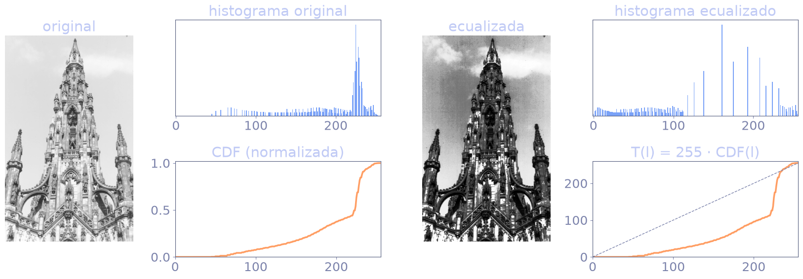
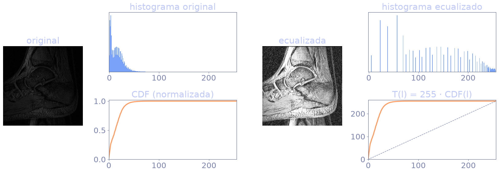
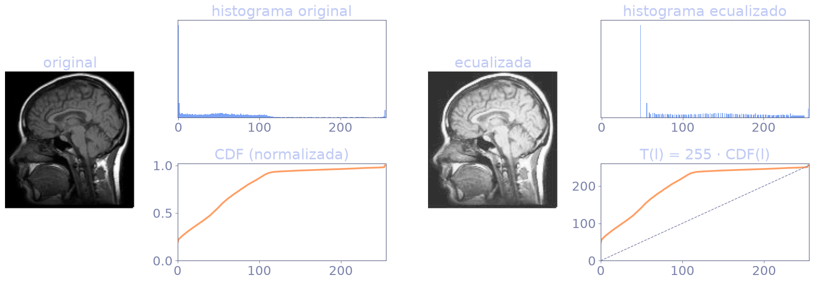
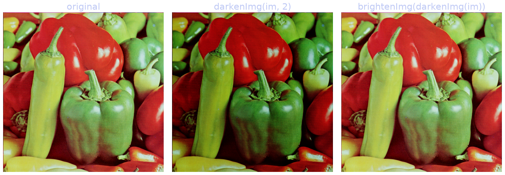
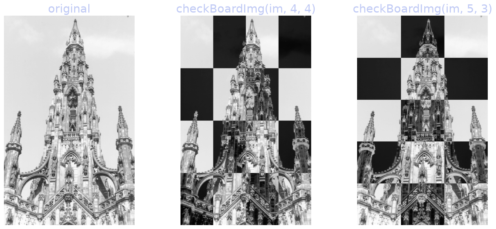
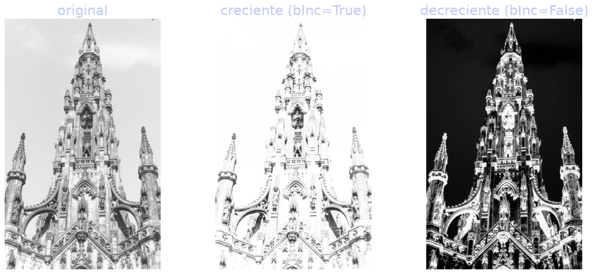

visión por computador · sjk002 · lab 1
Lab 1: realce y NumPy
Escribir de memoria, con NumPy y PIL, cada función del laboratorio.
bloque a · repaso para el examen
Python y NumPy
dtype, indexación, broadcasting, copias, axis y vectorizar.
panorama · qué cae en el examen
Qué pide el lab
| Habilidad | Pregunta típica |
|---|---|
| vectorizar | reescribir un doble bucle sin bucles |
| indexación | recortar, submuestrear, máscaras, LUT |
| broadcasting | ¿se puede sumar (10×8) con (8×1)? |
| copias | ¿la función modifica la entrada? |
| axis | ¿qué se suma, filas o columnas? |
np.clip, np.where, np.interp, np.histogram… con la firma correcta y el dtype bajo control.entrada y salida de imágenes
Cargar y guardar con PIL
from PIL import Image
im = np.array(Image.open('iglesia.pgm').convert('L')) # (H, W) uint8
rgb = np.array(Image.open('peppers.ppm').convert('RGB')) # (H, W, 3) uint8
Image.fromarray(im.astype(np.uint8)).save('salida.pgm')
| Llamada | Qué hace | Trampa |
|---|---|---|
| Image.open(f) | abre el fichero (aún no es un array) | devuelve un objeto Image, no un ndarray |
| .convert('L') | gris de 8 bits; 'RGB' = 3 bandas | sin convert, una PPM queda en color |
| np.array(img) | Image → ndarray, dtype uint8 | forma (H, W) o (H, W, 3): filas primero |
| Image.fromarray(a) | ndarray → Image | con float da basura: antes astype(np.uint8) |
uint8 es aritmética módulo 256
dtype y desbordamiento
a = np.array([250], dtype=np.uint8) a + 10 # array([4], dtype=uint8) a.astype(float) + 10 # array([260.]) im ** 2 / 255 # ✗ im**2 desborda en uint8 im ** 2.0 / 255 # ✓ float desde el principio
| dtype | rango | uso |
|---|---|---|
| uint8 | 0 … 255 | leer y guardar |
| float64 | ≈ 15 cifras | cálculos intermedios |
| bool | False / True | máscaras (im > 128) |
elemento a elemento o producto matricial
* frente a @
a
b
a * b elemento a elemento
a @ b producto matricial
a*b es el producto matricial?» No: es elemento a elemento. El matricial es a @ b o np.dot(a, b).recortar, submuestrear, filtrar, tabular
Indexación y slicing
A = np.arange(16).reshape(4, 4) A[1:3, 0:2] # [[4, 5], [8, 9]] recorte A[::2, ::2] # [[0, 2], [8, 10]] submuestreo A[:, 0] # [0, 4, 8, 12] columna 0 rgb[:, :, 0] # banda R: forma (H, W)
B = A.copy(); B[B > 10] = 99 # máscara booleana T = np.array([255, 170, 85, 0]) # LUT de 4 niveles im = np.array([[0, 2], [3, 1]]) T[im] # [[255, 85], [0, 170]]
A (matriz de ejemplo)
T[im] usa cada píxel como índice de T: aplica la transformación a toda la imagen a la vez.¿(10×8) + (8×1)?
Broadcasting: reglas
1Se alinean las formas por la derecha.
2Cada par de dimensiones debe ser igual, o una de las dos debe valer 1 (y se estira).
3Si a una forma le faltan dimensiones por la izquierda, se rellenan con 1: (8,) → (1, 8).
comprobado en python
Broadcasting: casos
| (10,8) + | resultado |
|---|---|
| 5 (escalar) | ok → (10,8) |
| (8,) → (1,8) | ok → (10,8) |
| (1,8) | ok → (10,8) |
| (10,1) | ok → (10,8) |
| (8,1) | error: 10 ≠ 8 |
| (10,) | error: 8 ≠ 10 |
np.zeros((10,8)) + np.ones((8,1)) # ValueError: operands could not be # broadcast together with shapes (10,8) (8,1)
c = np.arange(3)[:, None]*10 + np.arange(4) # (3,1) + (4,) → (3,4) # [[ 0, 1, 2, 3], # [10, 11, 12, 13], # [20, 21, 22, 23]]
x[:, None] convierte un vector (n,) en columna (n, 1).¿quién modifica a quién?
Copia frente a referencia
b = im # mismo array (alias) b[0, 0] = 0 # ¡cambia también im! c = im.copy() # copia real v = im[1:3] # vista: comparte memoria v[:] = 0 # modifica im np.shares_memory(im, b) # True np.shares_memory(im, c) # False
| Operación | ¿Comparte? |
|---|---|
| b = a | sí (alias) |
| a[1:3], a[:, 0] | sí (vista) |
| a.copy(), a.astype(float) | no |
| a[a > 0], a[[0, 1]] | no (copia) |
add_TLA_noise asigna im[...] = ...: modifica la imagen de entrada. remove_TLA_noise hace np.copy primero.la dimensión que desaparece
El parámetro axis
M, forma (2, 3)
axis = la dimensión que desaparece
M.sum(axis=0) → (3,)
una suma por columna
M.sum(axis=1) → (2,)
una suma por fila
rgb.mean(axis=2): (H, W, 3) → (H, W). Promedia las tres bandas (no es la luminancia ponderada de convert('L')).M.sum() aplana el array y devuelve un escalar: 21.medido en la iglesia (663×412)
Vectorizar frente a bucles
def brighten_loop(im, p=2): # ✗ bucles
out = np.zeros(im.shape)
for i in range(im.shape[0]):
for j in range(im.shape[1]):
out[i, j] = (255.0**(p-1) * im[i, j]) ** (1/p)
return out
def brightenImg(im, p=2): # ✓ una línea
return np.power(255.0**(p-1) * im, 1. / p)
0,37 s frente a 0,7 ms (barras a escala). Mismo resultado: np.allclose = True.
bloque b · p1.py y visualPercepUtils.py
El código del profesor
darkenImg, brightenImg e histeq, línea a línea.
oscurecer con una potencia
darkenImg(im, p=2)
def darkenImg(im, p=2):
return (im ** float(p)) / (255 ** (p - 1))
p entero, uint8 ** 2 sigue en uint8 y desborda.aclarar con la raíz p-ésima
brightenImg(im, p=2)
def brightenImg(im, p=2):
return np.power(255.0 ** (p - 1) * im, 1. / p)
math.pow solo admite escalares: con un array da TypeError.| x1 | base (array o escalar) |
| x2 | exponente, con broadcasting |
| → | array float64 de la forma de x1 |
componer ambas funciones
Una es la inversa de la otra
ecualización del histograma
histeq, línea a línea
def histeq(im, nbins=256):
imhist, bins = np.histogram(im.flatten(), list(range(nbins)))
cdf = imhist.cumsum() # histograma acumulado
factor = 255 / cdf[-1] # cdf[-1] = nº de píxeles
im2 = np.interp(im.flatten(), bins[:-1], factor * cdf)
return im2.reshape(im.shape), cdf
| Línea | Qué obtiene |
|---|---|
| np.histogram | h(l): nº de píxeles con nivel l |
| cumsum | cdf(l): píxeles con nivel ≤ l |
| factor * cdf | T(l), ya en [0, 255] |
| np.interp | T evaluada en cada píxel |
| reshape | vuelve a (H, W) |
factor * cdf es la T(l) escalada a [0, 255]; np.interp la evalúa en cada píxel.
fichas de función
np.histogram y cumsum
| a | array 1D (im.flatten()) |
| bins | nº de cajas, o la lista de bordes |
| → hist | conteos, longitud nbins |
| → bin_edges | bordes, longitud nbins + 1 |
| → | suma acumulada, misma longitud |
| ej. | [2,3,1,2].cumsum() = [2,5,6,8] |
list(range(256)) son 256 bordes = 255 cajas. La última, [254, 255], incluye ambos extremos: 254 y 255 caen juntos.fichas de función · interpolación lineal
np.interp y reshape
| x | puntos donde evaluar (array) |
| xp | abscisas crecientes |
| fp | valores en xp (misma longitud) |
| → | float64; fuera de rango, extremos |
xp = [0, 1, 2, 3]; fp = [0, 10, 40, 40] np.interp(1.5, xp, fp) # 10 + 0.5·(40−10) = 25.0 np.interp(5, xp, fp) # 40.0 (extremo) a.reshape(im.shape) # vuelve a (H, W)
ejemplo numérico · de ejemplo, N = 8 píxeles
Ecualizar a mano
| l | h(l) | cdf(l) | T(l) = 255·cdf/8 |
|---|---|---|---|
| 0 | 2 | 2 | 63,75 |
| 1 | 3 | 5 | 159,38 |
| 2 | 1 | 6 | 191,25 |
| 3 | 2 | 8 | 255 |
resultado real · iglesia.pgm
Resultado: iglesia

Rango 38–255 → casi todo el rango; entropía 5,975 → 5,918 bits.
resultado real · huesos.pgm
Resultado: huesos

Rango 0–93 → 0–255: ganancia de contraste enorme; entropía 5,254 → 5,204 (no aumenta).
resultado real · cabeza.pgm
Resultado: cabeza

Fondo negro dominante: la CDF salta al inicio y el mínimo ecualizado sube a ≈ 48. Entropía 6,481 → 6,286.
funciones de visualización del profesor
visualPercepUtils
| Función | Qué hace |
|---|---|
| showInGrid(imgs, m, n, title, subtitles) | cuadrícula de imágenes (o curvas 1D) |
| showImgsPlusHists(im, im2, title) | im, im2 y sus dos histogramas |
| histImg(im) | np.histogram(im.flatten(), 256)[0] |
| showPlusInfo(data, title) | plt.plot(data), p. ej. la CDF |
| showInFigs(imgs, title) | una figura por imagen |
fig = plt.figure(figsize=(m, n)); plt.gray() ax = fig.add_subplot(m, n, i) # i-ésima celda, empieza en 1 plt.imshow(img) # img 2D: se muestra con cmap gris plt.show(block=True) # espera a cerrar la ventana
lo que no se ve a simple vista
Trampas al mostrar
vmin=0, vmax=255, imshow estira el mínimo y el máximo de cada imagen a todo el rango de grises. Dos imágenes de brillo distinto pueden verse igual.np.histogram(x, 256) divide el intervalo [mínimo, máximo] de los datos en 256 cajas, no los niveles 0…255. Con huesos (0–93) cada caja mide ≈ 0,36 niveles: salen huecos.np.histogram(im, bins=256, range=(0, 256)) o np.bincount(im.ravel(), minlength=256).np.bincount(im.ravel(), minlength=256) es la forma más corta y exacta.patrón del profesor
doTests y eval
tests = ['testHistEq', 'testBrightenImg', ...]
for imfile in files:
im = np.array(Image.open(imfile).convert('L'))
for test in tests:
out = eval(test)(im) # nombre → función
im2 = out[0]
eval('testHistEq') evalúa el texto como código Python y devuelve la función; (im) la llama.
TESTS = {'testHistEq': testHistEq,
'testBrightenImg': testBrightenImg}
out = TESTS[test](im) # ✓ diccionario
out = globals()[test](im) # ✓ sin diccionario
bloque c · ejercicios 2 a 6
Ejercicios resueltos
Enunciado, idea, código de la solución y resultado real.
ejercicio 2 · una sola línea para guardar
E2 · saveImg
# antes: 4 líneas dentro de doTests dirname, basename = os.path.dirname(imfile), os.path.basename(imfile) fname, fext = os.path.splitext(basename) pil_im = Image.fromarray(im2.astype(np.uint8)) pil_im.save(path_output + '//' + fname + suffixFiles[test] + fext)
def saveImg(im, path, name, suffix='', ext='.pgm'):
out = np.clip(im, 0, 255).astype(np.uint8)
Image.fromarray(out).save(
os.path.join(path, name + suffix + ext))
saveImg(im2, path_output, fname, suffixFiles[test], fext)
| join(a, b) | une con el separador |
| splitext(p) | ('imgs/iglesia', '.pgm') |
| basename(p) | 'iglesia.pgm' |
| dirname(p) | 'imgs' |
ejercicio 3 · generalizar a color
E3 · imágenes en color
im = np.array(Image.open('peppers.ppm').convert('RGB'))
dk = darkenImg(im, 2) # ya funciona: elemento a elemento
br = brightenImg(dk, 2) # deshace el oscurecido
def perBand(f, im, *args): # banda a banda
if im.ndim == 2:
return f(im, *args)
return np.dstack([f(im[..., k], *args)
for k in range(im.shape[2])])
np.allclose(br, perBand(brightenImg, dk, 2)) # True
La fórmula actúa píxel a píxel y por banda de forma independiente: la forma (H, W, 3) no importa.
| Función | ¿Bucle por bandas? |
|---|---|
| np.power, +, * | no hace falta |
| np.histogram | sí (aplana todo) |
| histeq | sí: una CDF por banda |
resultado real · peppers.ppm
E3 · resultado real

Ida y vuelta: el error máximo es ≈ 0 (solo redondeo de coma flotante).
ejercicio 4 · tablero de ajedrez
E4 · checkBoardImg
def checkBoardImg(im, m, n): # m × n celdas
i, j = np.indices(im.shape[:2]) # fila, columna
ci = i * m // im.shape[0] # celda 0…m−1
cj = j * n // im.shape[1] # celda 0…n−1
inv = (ci + cj) % 2 == 1 # alternas
return np.where(inv, 255 - im, im)
Celdas vecinas difieren en 1 en ci o en cj: su suma cambia de paridad. Es el patrón del ajedrez.
(ci + cj) mod 2 para m = n = 4: 1 = celda invertida
fichas de función · mini ejemplos
np.indices y np.where
| dimensions | tupla de forma, p. ej. (H, W) |
| → | array (2, H, W): i = fila, j = columna |
i, j = np.indices((2, 3)) # i = [[0,0,0],[1,1,1]] j = [[0,1,2],[0,1,2]]
| cond | máscara booleana |
| x, y | valores (arrays o escalares), con broadcasting |
| → | x donde cond, y en el resto |
im = np.array([[10, 200], [128, 127]]) np.where(im >= 128, 255, 0) # [[0,255],[255,0]]
resultado real · iglesia.pgm
E4 · resultado real

Fig. 1 del enunciado: celdas 4×4 y 5×3.
ejercicio 5 · árbol de cuadrantes
E5 · cuántos histogramas
ejercicio 5 · código y comprobación
E5 · multiHist
def multiHist(im, n, bins=256):
hists = []
for l in range(n): # 4^l bloques
k = 2 ** l
rs = np.linspace(0, im.shape[0], k + 1).astype(int)
cs = np.linspace(0, im.shape[1], k + 1).astype(int)
for i in range(k):
for j in range(k):
blk = im[rs[i]:rs[i+1], cs[j]:cs[j+1]]
hists.append(np.histogram(blk, bins)[0])
return hists
np.array_split reparte el resto al revés y no reproduce los números del PDF; linspace(...).astype(int) sí.multiHist(iglesia, 2, 3) [25837, 53944, 193375] # nivel 0 [ 1811, 3782, 62593] # arriba izq. [ 3835, 7701, 56650] # arriba der. [ 9006, 19530, 39856] # abajo izq. [10921, 21955, 35516] # abajo der.
coincide con el enunciado; suma de la fila 1 = 273 156 = 663·412
ejercicio 6 · transformación exponencial
E6 · expTransf
def expTransf(alpha, n, l0, l1, bInc=True):
l = np.linspace(l0, l1, n)
g = np.exp(-alpha * l**2)
a = (l1 - l0) / (g[-1] - g[0])
b = l0 - a * g[0]
T = a * g + b # creciente
return T if bInc else T[::-1]
ejercicio 6 · rango de 0 a 255
E6 · curvas según alfa
α pequeño ⇒ casi la identidad. α grande ⇒ T sube muy deprisa y satura: aclara las sombras.
bInc=False da la curva invertida: de l₁ a l₀.
f[0] == l0 y f[-1] == l1 con np.isclose.azul: bInc=True · naranja: bInc=False (T[::-1])
aplicar una tabla (LUT) a una imagen
transfImage(im, f)
def transfImage(im, f, l0=0, l1=255): # f = LUT de n valores
return np.interp(im, np.linspace(l0, l1, len(f)), f) # o f[im]
| f[im] | np.interp | |
|---|---|---|
| im entera | sí | sí |
| len(f) ≠ 256 | no | sí |
| im float | no | sí |
T = [255, 170, 85, 0] (de ejemplo)
im
T[im]
T[0] = 255, T[2] = 85… una sola operación para toda la imagen.resultado real · iglesia.pgm, α = 10⁻⁴
E6 · resultado real

transfImage(im, expTransf(1e-4, 256, 0, 255, bInc)): la creciente aclara las sombras; la decreciente invierte los niveles.
bloque d · ejercicio 1 y repaso final
Chuleta y examen
Todas las funciones del lab, la plantilla y preguntas tipo examen.
ejercicio 1 · resumen por categorías
NumPy I: crear y mover
| Función | Uso en una línea |
|---|---|
| np.zeros((H, W)) | matriz de ceros (float64); np.ones de unos |
| np.arange(n) | 0, 1, …, n−1 (el final no entra) |
| np.linspace(a, b, n) | n valores equiespaciados, con a y b incluidos |
| np.indices((H, W)) | coordenadas (fila, columna) de cada píxel |
| a.reshape(s) / a.flatten() | cambia la forma (vista) / aplana (copia) |
| a.copy() / a.astype(t) | copia real / copia con otro dtype |
| np.dstack(lista) | apila (H, W) en (H, W, k): une bandas |
| a.shape, a.ndim, a.dtype | forma, nº de dimensiones, tipo |
ejercicio 1 · resumen por categorías
NumPy II: calcular
| Función | Uso en una línea |
|---|---|
| np.clip(x, 0, 255) | recorta al intervalo; antes de astype(np.uint8) |
| np.where(c, x, y) | x donde c es cierta, y donde no |
| np.power(x, e) | x ** e elemento a elemento |
| np.interp(x, xp, fp) | interpolación lineal en una tabla |
| np.histogram(a, bins) | (conteos, bordes); bordes = nbins + 1 |
| np.bincount(a, minlength=256) | histograma exacto de enteros ≥ 0 |
| a.cumsum() | suma acumulada (CDF) |
| a.sum / mean / min / max(axis) | reducción; axis es la dimensión que desaparece |
| np.allclose(a, b) | ¿iguales salvo error de redondeo? |
ejercicio 1 · resumen por categorías
PIL, Matplotlib, os
| Categoría | Función | Uso en una línea |
|---|---|---|
| PIL | Image.open(f).convert('L') | abrir y pasar a gris de 8 bits |
| PIL | Image.fromarray(a).save(f) | guardar un array uint8 |
| plt | plt.figure(figsize=(w, h)) | nueva figura |
| plt | fig.add_subplot(m, n, i) | celda i de una rejilla m × n |
| plt | plt.imshow(im, cmap='gray') | mostrar una matriz como imagen |
| plt | plt.plot(y); plt.show() | curva 1D; mostrar la ventana |
| os | os.path.join / splitext / basename | construir y trocear rutas |
| glob | glob.glob(carpeta + '/*.pgm') | lista de ficheros que cumplen el patrón |
cuatro pasos siempre
Plantilla para el examen
1Convertir a float.
2Operar vectorizado (sin bucles).
3Recortar y convertir el tipo si se guarda.
4No modificar la entrada.
def f(im, ...):
x = im.astype(float) # 1 (y 4: copia)
y = ... # 2 fórmula NumPy
return y
# al guardar:
np.clip(y, 0, 255).astype(np.uint8) # 3
tipo examen · inténtalo antes de mirar
Mini ejercicios (I)
1 · threshold(im, thr): 255 si im ≥ thr; 0 si no.
def threshold(im, thr):
return np.where(im >= thr, 255, 0).astype(np.uint8)
# [[10, 200], [128, 127]], thr = 128 → [[0, 255], [255, 0]]
2 · negative(im): invierte los niveles.
def negative(im):
return 255 - im
# [[10, 200], [128, 127]] → [[245, 55], [127, 128]]
255 - im es seguro: el resultado queda en [0, 255]. im - 255 desbordaría.tipo examen · inténtalo antes de mirar
Mini ejercicios (II)
3 · gamma(im, g): 255·(r/255)^g en [0, 255].
def gamma(im, g):
return 255 * (im.astype(float) / 255) ** g # r = 100, g = 2 → 39.2157
4 · stretch(im): estiramiento min-max a [0, 255].
def stretch(im):
x = im.astype(float)
return (x - x.min()) / (x.max() - x.min()) * 255
# [[50, 100], [150, 200]] → [[0, 85], [170, 255]]
tipo examen · decide antes de mirar
Verdadero o falso (I)
«a * b entre dos arrays 2D es el producto matricial.»
a @ b.«Una matriz (10, 8) y otra (8, 1) se pueden sumar por broadcasting.»
«Si a es uint8 y vale 250, a + 10 vale 260.»
«b = a[1:3] crea una copia independiente de esas filas.»
b cambia a.tipo examen · decide antes de mirar
Verdadero o falso (II)
«M.sum(axis=0) devuelve una suma por columna.»
«darkenImg y brightenImg con el mismo p son inversas.»
«Ecualizar el histograma aumenta la entropía.»
«np.histogram(x, list(range(256))) devuelve 256 conteos.»
«Vectorizar con NumPy acelera órdenes de magnitud.»